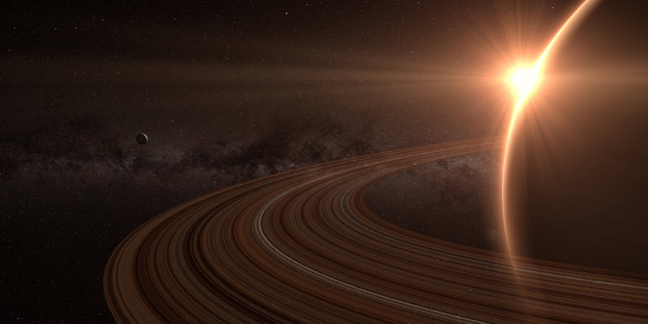

|
Planet 1 |
Planet 2 |
Planet 3 |
Planet 4 |
| Images |
|
|
 |
|
| Fact #1 |
Earth is the only known planet with liguied water on its surface. |
Mars is called the "red planet" due to iron oxide on its surface. |
Saturn is famous for its stunning ring system made of ice and rock. |
Venus is the hottest planet, with an average temperature of 450°C (869°F). |
| Fact #2 |
About 71% of Earth’s surface is covered by oceans. |
Olympus Mons, the largest volcano in the Solar System, is on Mars. |
It’s the second-largest planet in the Solar System. |
It rotates backward — the Sun rises in the west! |
| Fact #3 |
The atmosphere is mostly nitrogen (78%) and oxygen (21%). |
Mars has two small moons: Phobos and Deimos. |
Saturn is a gas giant composed mostly of hydrogen and helium. |
One day on Venus is longer than its year. |
| Fact #4 |
Earth has one natural satellite — the Moon. |
Its seasons last twice as long as Earth’s. |
A Saturn day lasts just about 10.7 hours. |
Its atmosphere is 96% carbon dioxide — extreme greenhouse effect! |
| Fact #5 |
It is the densest planet in the Solar System. |
There’s evidence of ancient water flows on Mars. |
Its density is so low it would float in water. |
Venus has no moons. |
| Fact #6 |
Earth’s magnetic field protects it from solar wind. |
Temperatures can drop to –125°C (–195°F). |
It has over 140 known moons (as of 2025). |
Its thick clouds reflect sunlight, making it very bright in the sky. |
| Fact #7 |
A full rotation takes 23 hours, 56 minutes, and 4 seconds — not exactly 24 hours! |
Its atmosphere is over 95% carbon dioxide |
Titan, its largest moon, has lakes of liquid methane and a thick atmosphere. |
There are signs of possible volcanic activity on Venus. |